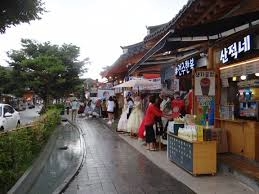
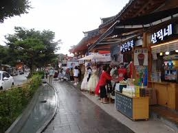

Jeonju
Jeonju Hanok Village is a place where people can enjoy festivals while wearing colorful traditional clothes in Korea. It is one of the most famous places for taking photos that will capture colorful and fond memories for tourists.
Jeonju Hanok Village is a place where people can enjoy festivals while wearing colorful traditional clothes in Korea. It is one of the most famous places for taking photos that will capture colorful and fond memories for tourists.
